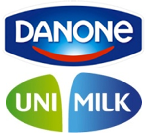
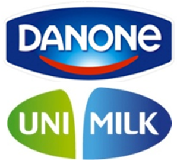

Tech. skills:


HTML/CSS
JavaScript
PHP
Oracle SQL PL/SQL DBA
Soft skills:
Analytical thinking
Efficient autonomous operating
Ability to learn quickly
Portfolio projects:
Kid's educational site
Experience (employers and their profits):

 


Stairs of personal achievements:
First-line IT-support engineer
Junior Oracle Database administrator
Oracle Certified Associate (OCA)
Oracle Certified Professional (OCP)
Leading Engineer
Chief Engineer
Expert
Today's position and goal:
Junior developer
Middle developer
Senior developer
Education:
State University of Technologies and Management
Languages:
English (B1)
Italian (A1)